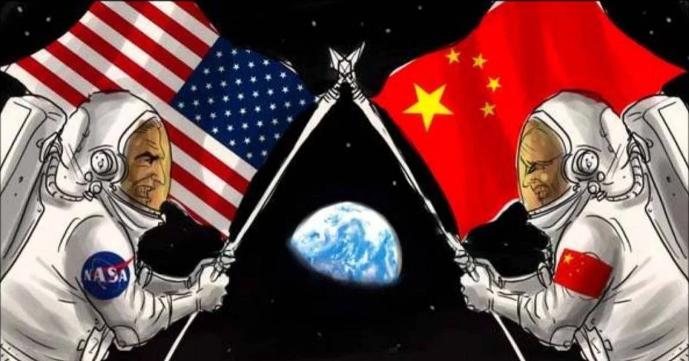

Como começou a Guerra Fria?
A Guerra Fria teve início após a Segunda Guerra Mundial, quando os Estados Unidos e a União Soviética emergiram como as principais potências militares do planeta.
Apesar de terem lutado contra a Alemanha nazista durante a Segunda Guerra Mundial, os dois países possuíam sistemas políticos e econômicos muito diferentes. Os Estados Unidos defendiam o capitalismo e a democracia liberal, enquanto a União Soviética defendia o socialismo sob um regime de partido único.
A disputa não resultou em uma guerra direta entre as duas superpotências. Em vez disso, ocorreu uma competição permanente por influência política, poder militar, tecnologia e espaço.
Principais acontecimentos
Doutrina Truman
Os Estados Unidos anunciaram uma política de contenção da expansão soviética.
OTAN e bomba atômica soviética
Foi criada a OTAN e a União Soviética realizou seu primeiro teste nuclear.
Muro de Berlim
O Muro de Berlim foi construído, tornando-se um dos principais símbolos da divisão entre os blocos.
Crise dos Mísseis
A instalação de mísseis soviéticos em Cuba provocou uma das maiores tensões nucleares da Guerra Fria.
Queda do Muro de Berlim
A queda do muro marcou o enfraquecimento definitivo da divisão política da Europa.
Fim da União Soviética
A dissolução da União Soviética é considerada o marco final da Guerra Fria.
Guerras por procuração
Estados Unidos e União Soviética evitaram um confronto militar direto, principalmente devido ao enorme poder destrutivo das armas nucleares.
Entretanto, as duas potências apoiaram diferentes governos, movimentos e grupos militares em conflitos ocorridos em várias partes do mundo.
Guerra da Coreia
Entre 1950 e 1953, a península coreana tornou-se um dos principais cenários da disputa entre os blocos.
Guerra do Vietnã
O conflito vietnamita esteve diretamente relacionado à disputa ideológica entre capitalismo e socialismo.
Afeganistão
A União Soviética interveio militarmente no Afeganistão em 1979, enfrentando grupos apoiados pelos Estados Unidos.
A corrida espacial
A competição entre Estados Unidos e União Soviética também chegou ao espaço. Cada conquista tecnológica era utilizada como demonstração de superioridade científica e política.

Da órbita à Lua
Em 1957, a União Soviética lançou o Sputnik 1, primeiro satélite artificial da história.
Em 1961, Yuri Gagarin tornou-se o primeiro ser humano a viajar pelo espaço.
Em 1969, os Estados Unidos alcançaram um dos maiores feitos da corrida espacial com a missão Apollo 11 e o primeiro pouso humano na Lua.
Capitalismo × Socialismo
A Guerra Fria também foi uma disputa de modelos políticos, econômicos e sociais.
Bloco Capitalista
- Economia de mercado
- Propriedade privada
- Democracia liberal
- Influência dos Estados Unidos
Bloco Socialista
- Economia planificada
- Propriedade estatal predominante
- Partido comunista
- Influência soviética
O fim da Guerra Fria
Durante a década de 1980, a União Soviética enfrentou graves problemas econômicos e políticos. As reformas promovidas por Mikhail Gorbachev, conhecidas como glasnost e perestroika, contribuíram para mudanças profundas no país e no bloco socialista.
Em 1989, a queda do Muro de Berlim simbolizou o enfraquecimento da divisão entre os blocos. Dois anos depois, em 1991, a União Soviética foi oficialmente dissolvida.
Mais de quatro décadas de disputa transformaram a política internacional e deixaram marcas que continuam influenciando o mundo contemporâneo.